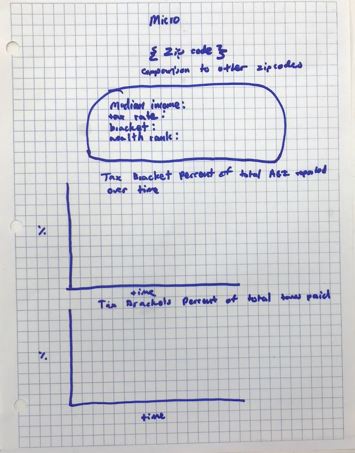
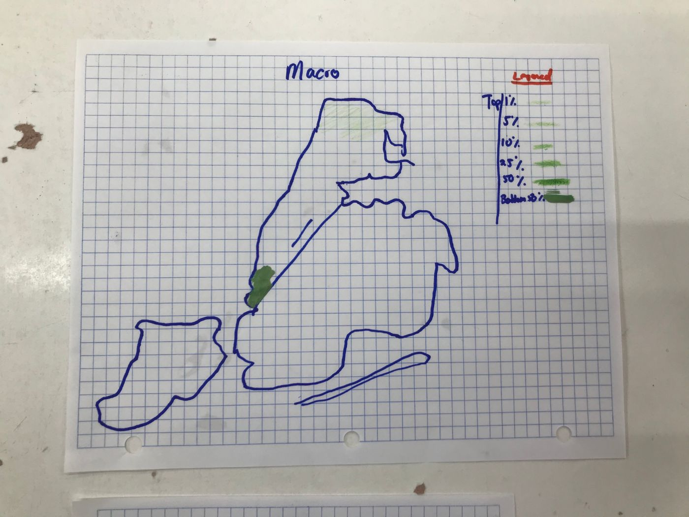

Introduction
Of all the different kinds of taxes in America (there are many), income tax is the largest source of funding of the United States' Government; income taxes account for over 40% of the total taxes that the Government collects each year.
Most Americans hold strong views about the tax system. Some Republicans think that a flat tax of 10% across all tax brackets is most fair. Many Social Democrats want increased tax rates and a new annual wealth tax on a person's net worth. There are also people in the middle who have mixed opinions about the current system, but don't want any drastic change.
Although many people hold such strong views, most people do not know the true figures. Unfortunately, this means that many people have formed their opinion based on misleading headlines or based on what they have been told by others. This website seeks to present the true figures in a simple way so that more people can form an opinion based on facts instead of headlines.
This website presents different income statistics for the median earner in each zip code in New York City. New York City is one of the regions of great wealth inequality within the United States.
Someone's AGI (Adjusted Gross Income) is their earnings minus their deductions.
This website does not endorse any particular view.
Data Cleansing Pipeline
- Downloaded CSVs from taxfoundation.org.
- Cleansed unneeded rows in Google Sheets and downloaded cleansed CSVs.
- Converted cleansed CSVs into JSON objects with format_data.py.
Prototypes


I originally started out with thousands of data points in different categories from decades of data collection. In order to prioritize simplicity and readability, I used an infographic map for the macro page to tell a broad story, and I used multiple different charts and line graphs for the micro pages to give supporting details to the overall broader story. I changed my original design by making a better infographic according to the feedback I received to increase readability and simplicity.
About this version
The original site was a Python/Flask app, which GitHub Pages can't run. This version rebuilds the same pages as a static site (HTML, CSS and JavaScript reading the same JSON data), with a few fixes: hover tooltips and click-through on the map, a searchable zip-code menu, a redrawn historical line chart with correct axis labels, corrected zip-code counts, and layouts that work on phones. The original Flask code is preserved in the Data Journalism Project folder.